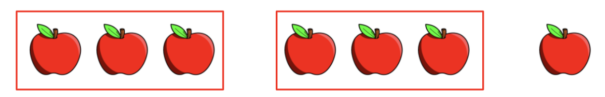
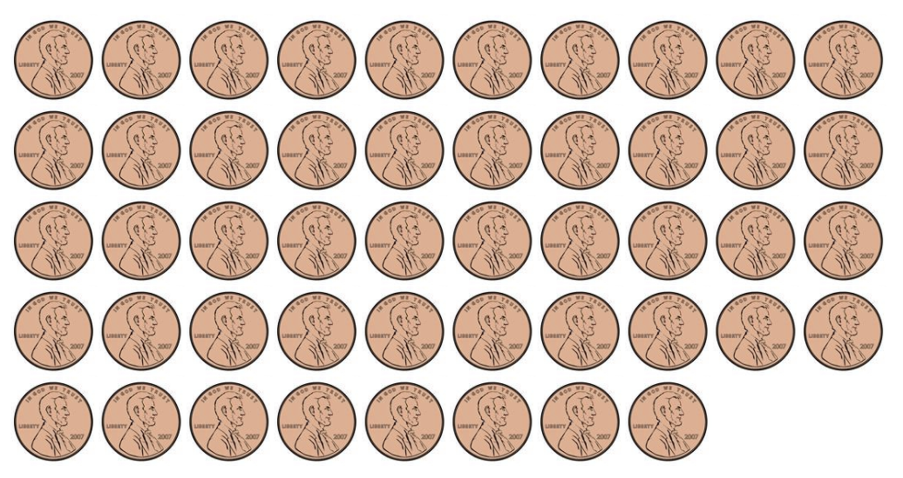
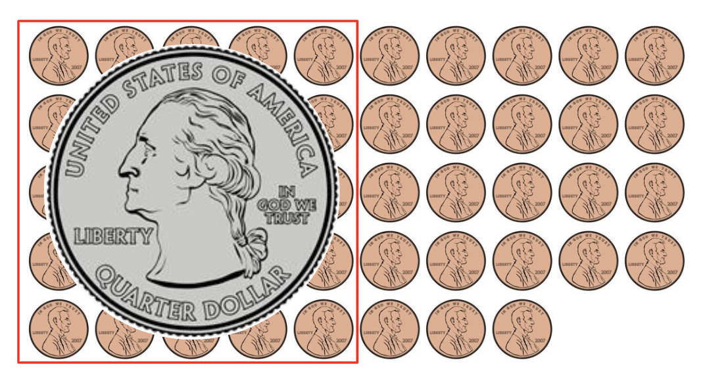

Lesson 4 - Arithmetic
At the end of this lesson, you will be able to:
- Use Python's math operators to perform calculations.
- Tell the difference between regular division
/and integer division//, and use the remainder operator%. - Use named constants instead of unexplained "magic numbers."
Math operators
Most programs do calculations, and Python's math operators look a lot like the ones you already know. An operator (like +) works on values called operands. You can use literal numbers or variables:
hours = 40pay_rate = 25.35total_pay = hours * pay_rate
| Symbol | Operation | Description |
|---|---|---|
| + | Addition | Adds two numbers. |
| - | Subtraction | Subtracts one number from another. |
| * | Multiplication | Multiplies one number by another. |
| / | Division | Divides one number by another; the result is a floating-point number. |
| // | Integer Division | Divides and keeps only the whole-number part. The decimal portion is truncated, not rounded. |
| % | Remainder (Modulus) | Divides one number by another and gives the remainder. |
| ** | Exponent | Raises a number to a power. |
Two kinds of division
This surprises people: Python has two division operators. Regular division / always gives a decimal (a float). Integer division // throws away the decimal part and keeps just the whole number:
def main():
num1 = 5
num2 = 3
print("num1 / num2 :", num1 / num2) # 1.666...
print("num1 // num2 :", num1 // num2) # 1
main()(One thing to avoid: dividing by zero. Python will stop with an error if you try, just like the math teacher always warned you.)
Order of operations
Python follows the same precedence rules you learned in math class: parentheses first, then exponents, then multiplication/division (left to right), then addition/subtraction. When in doubt, add parentheses to make your intent clear.
What will each of these expressions evaluate to?
(5 + 2) * 410 / (5 - 3)8 + 12 * (6 - 2)(6 - 2) * (3 + 8) // 3
Show Solution
- 28
- 5.0
- 56
- 14 (Remember,
//truncates the decimal portion of the answer.)
The remainder operator: %
The modulus operator % gives you the remainder after division - the part left over. Picture 7 apples sorted into groups of 3:

You get 2 full groups (that's 7 // 3) with 1 apple left over (that's 7 % 3). The remainder seems like a small thing, but it's secretly one of the most useful tools in programming. For example, a number is even exactly when dividing it by 2 leaves no remainder:
def main():
print(5 % 2) # 1 -> odd (remainder is 1)
print(4 % 2) # 0 -> even (remainder is 0)
main()The remainder is always smaller than what you're dividing by. So % 2 can only ever give 0 or 1; % 3 gives 0, 1, or 2; % 10 gives any digit 0 through 9. That last one is handy for pulling off the final digit of a number.
A classic use is making change. Say you have 48 cents and want to break it into coins. Pull out as many quarters as you can with //, then use % to see what's left, and repeat:


def main():
cents = 48
quarters = cents // 25 # how many whole quarters? -> 1
cents = cents % 25 # what's left over? -> 23
# ... now do the same with dimes (10) and nickels (5) ...
print('Quarters:', quarters)
main()For more practice with this pattern, here's a walk-through of a similar conversion program:
Named constants (don't use magic numbers)
Look at this line:
amount = balance * 0.075
What's 0.075? Six months from now, will you remember? A bare number dropped into code with no explanation is called a magic number, and it's a small trap - it's unclear, and if that rate appears in five places you'd have to change all five. The fix is a named constant: a variable, written in ALL_CAPS, whose value isn't meant to change:
INTEREST_RATE = 0.075amount = balance * INTEREST_RATE
Now it's self-explanatory, and it lives in exactly one place. By convention, constants are declared at the top of your file, outside of main() (no indentation), so the whole program can see them:
TAX_RATE = 0.0875
def main():
cost = 10.24
tax = cost * TAX_RATE
total = cost + tax
print(f'Cost: ${cost:.2f}')
print(f'Tax: ${tax:.2f}')
print(f'Total: ${total:.2f}')
main()(Notice the f-strings doing the money formatting from the last lesson - :.2f keeps everything to two decimal places.)

Partner Activity
With a partner from your study group, write a program that:
- Asks the user for the cost of an item.
- Calculates the tax, using
0.0875stored as a constant namedTAX_RATE. - Prints the cost, the tax, and the total - each formatted to 2 decimal places with a
$.
Your run should look something like:
Enter cost of item: $ 10
Cost: $10.00
Tax: $0.88
Total: $10.88
Run the program with at least two purchase amounts and compare the results with your partner.
Coming up next: You now have variables, data types, input/output, and math - everything you need to write real little programs. Next we level up: writing your own functions so you can name and reuse chunks of code.